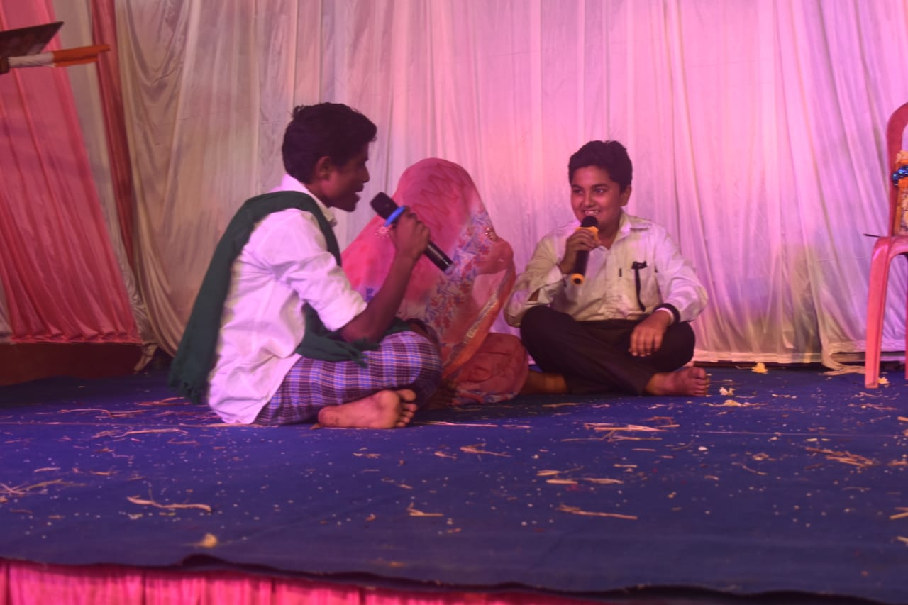

Our school annual day is a much-anticipated event that brings together the entire school community. It is a time when we showcase our talents and celebrate our achievements over the past academic year. The preparations for the annual day begin months in advance. Students are assigned various roles and responsibilities, ranging from organizing the decorations to rehearsing for the cultural programs. Teachers and staff members work tirelessly to ensure that everything runs smoothly on the day of the event. On the day of the annual day, the school is transformed into a colorful and vibrant venue, decorated with balloons, banners, and streamers. The students arrive in their finest attire, with a sense of excitement and anticipation in the air.
The event begins with a formal opening ceremony, which includes speeches from the school principal, chief guest, and other dignitaries. The cultural programs follow, with students showcasing their talents in music, dance, drama, and other performances. The audience is treated to a variety of entertaining and educational programs that showcase the diversity and creativity of the student body. The annual day is also an opportunity for students to showcase their academic achievements. Awards and prizes are given out to students who have excelled in various fields, such as academics, sports, and extracurricular activities. This helps to boost their morale and inspire them to strive for even greater success in the future. The annual day is not just about entertainment and recognition, however. It is also a time for us to reflect on our past accomplishments and set new goals for the future. It is an occasion for us to come together as a school community and celebrate our shared values and aspirations. In conclusion, our school annual day is a significant event that highlights the talents and achievements of our students. It is a time when we come together to celebrate our successes, inspire one another, and set new goals for the future. Through the annual day, we strengthen our sense of community and pride in our school, and we look forward to its celebration every year